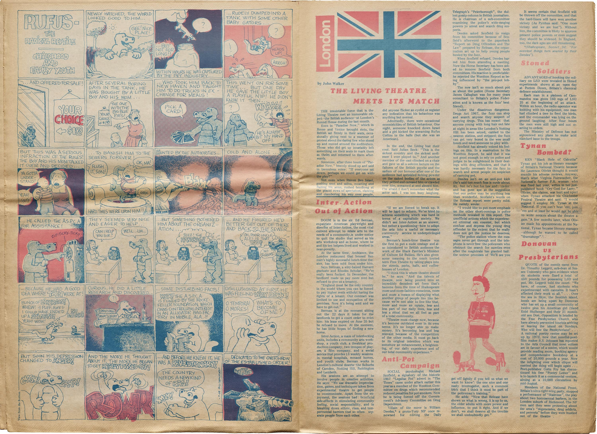
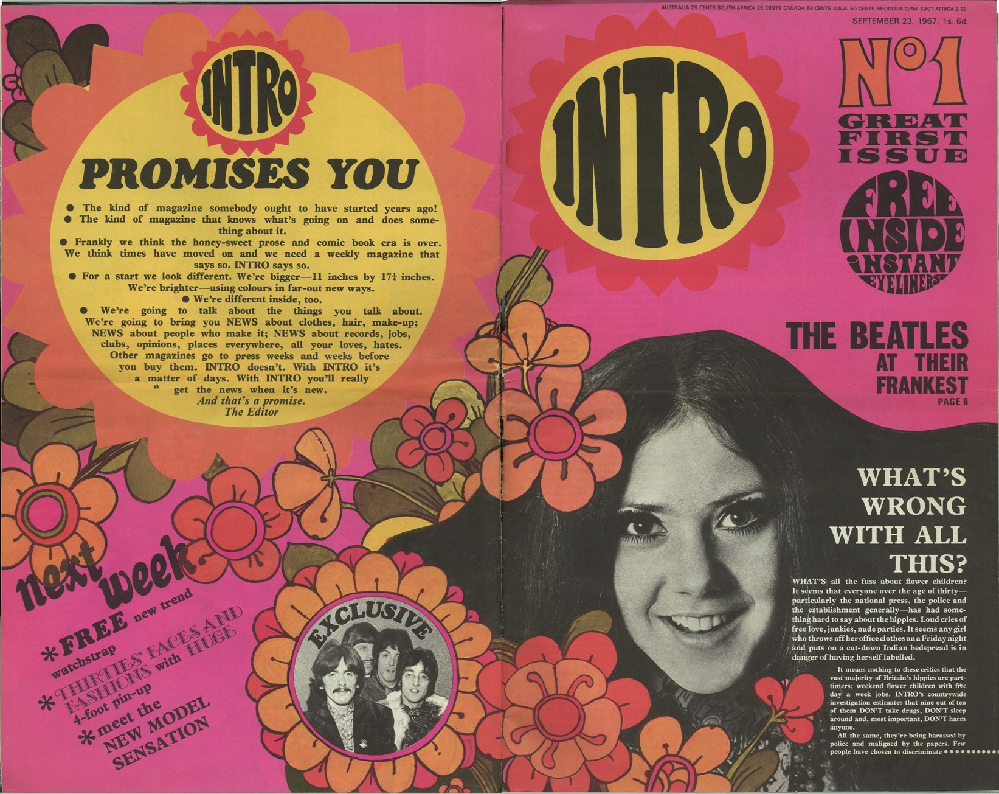
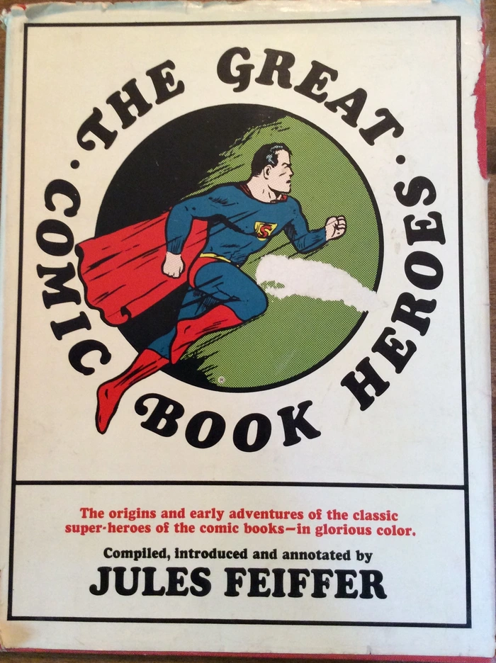
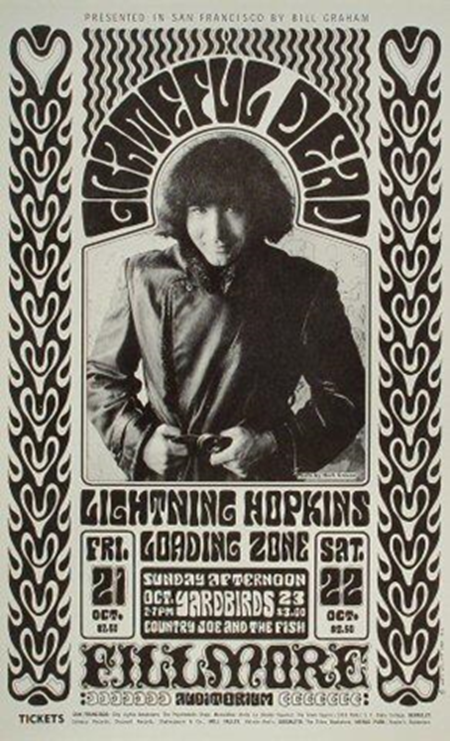

Are you curious to understand how we created this project? On this page you can find the information you need!
Under the Magnifying Glass is a digital magazine on famous literary detective figures. Each issue contains selected stories and articles that contain metadata-enriched text and a stylistically customizable layout according to six historically inspired themes.
The issues of this magazine consist in both short detective stories and articles related to the former ones. In particular, the issues texts selected for this project are two Sherlock Holmes stories written by Conan Doyle having as main characters female figures and an article examining the female characters in Doyle's stories. The metadata that the user has the possibility to explore allow indeed to investigate the presence of female characters in the texts: in the metadata viewer it is possible to select them specifically and to consult their position in the texts and their names. The other characters, as well as mentioned places, cited cases and cited literary works can be explored in the same way, allowing to expirience the texts and their inter-connections with a wider perspective.
The first style the user can choose to navigate the page in, was inspired by the style of XVI century manuscripts, and specifically by the German production from Thantwerpen (Gheprint by H. Peeterssen, van Middelburch, ca 1540), and by the naturalistic works of Aldrovandi and Camerarius released during the same period.
The screen background changes to a yellowish, manuscript-paper like background, created starting from a blank page of one of Aldrovandi manuscript (Bologna, Biblioteca Universitaria, ms. Aldrovandi 6, vol. III) and the font becomes more and more voluptuous following the style of the period. Two fonts have been selected one for all paragraphs and titles and one specifically for the initials, that presents nature-inspired lines décor around the letters. The colors shift to a brown-ochre palette that influences mainly hyperlinks, inline and in the navbars, and borders, of tables and buttons. Two colors outside the ochre palette are used: the peculiar red was used specifically for h1 titles, and is the same one used in the title of the German manuscripts taken as inspiration (“Heinric en Margriete van Limborch” and “Pyramus ende Thisbe”), while the dark grey used for borders of images and tables is the same one used for the frames of the images in Camerarius’ manuscript (“Symbolorvm & emblematvm ex re herbaria desvmtorvm centvria vna collecta”)
The images are all filtered with a sepia effect and follow two main styles: the one taken from the German manuscripts’ inspo was chosen to highlight the images presenting the three issues of this website in the cards on the index page and consist of an image-border on the left and right to recall the miniated grid around images in the manuscript; while the second style follows the framed images in Camerarius with a round double border that is used for all other images in the website, both in the index and the issues page. The same frame style was modelled around the image in the about section, that was modified accordingly.
For what concerns the texts, headings were bordered to follow the German style, paragraphs are justified as happens in all the manuscripts’ taken into account for this style and the first letter of each first paragraph was encapsulated in a bordered box to recall miniated capoletters, while tables and buttons despite having no lookalike in the physical versions have been simply solid bordered with a black line to emulate what happens in Aldrovandi’s genealogical tree of the species he studied and documented in his manuscripts.
Want to have a look at what inspired this style? See our Pinterest Board
The second reading style found its first source of inspiration in the XIXth century first newspapers, the screen background is set to recall the white-greyish paper of the printed journals, with their folds and spots of spilled ink; The font for the paragraphs has been chosen to be the most similar as possible to the ones used in the printing, slightly smudged and washed, while the navbars (both the fixed one and the second for the toggling of the articles to display in the issue page) present a double border following the style of the dateline under the masthead of newspapers.
To this main inspiration was however added a second one that influenced all the other stylistic choices: since Sherlock Holmes’ stories were first published in the late XIX century on a magazine called The Strand Magazine, its style was taken in consideration for all the details in the webpage. Starting from the font of the titles, different to the ones used for the paragraphs and more similar to the one of the headings in The Strand (Cardinal) with its slightly elongated and curled serifs.
The style (border and background) of the tables (both in texts and the metadata one) and buttons was also inspired by the magazine, and specifically by the box on the front page with the info on the publication, with its scooped corners and thin solid border while the borders of the cards and icon-boxes in the index page are double border with a wider inner line (the different dimensions of this “double” border are actually achieved by the use of a single solid wide border and a thinner outline) that emulate the frame on the cover of The Strand. The cover of the magazine was also taken in consideration for its peculiar light blue color that was used for links and for the background on hover in the icon-boxes of the index page. Lastly all images were filtered to be black and white and border with a single solid line, with no rounded corners as it was the case in the magazine’s publications, for the same reason their captions specifically in the articles section were rendered in all caps and centred under the images.
Want to have a look at what inspired this style? See our Pinterest Board
This style is dedicated to the early 20th century, with its main inspirations being the bauhaus movement, which promoted essentiality, modernity and functionality in creative design. The essence of this style is implemented in this website by adapting the articles layout to mimic the publications of that time, through wider margins - paddings and the following design elements.
Regarding the text, we used variations of three sans-serif geometric typefaces -Cypher,Mandala and Xpressive, which vary mostly in thickness- that resemble the historic Bayer's Universal, or of fonts displayed in publications of the time which were our source of inspiration. Paragraphs are set to the default size of 1em with justified alignment, while headings and other text components feature variety in size, weight, and transformations of full lowercase or uppercase, to achieve the bold visuals that were prominent in publications of the time.
For what concerns colors, traditional bauhaus publications were often in primarily black and white. We use the same approach for our main and issues pages, maintaining an off-white shade as a background, and black color for text paragraphs and headings, navbar menu and boxes, and a grayscale filter on all images throughout the website. Of course, the primary colors could not be missing from this theme, so we incorporated them in the details of secondary elements such as borders, buttons, active and bold elements and headers for emphasis purposes. Lastly, we added thick lines for underlining/emphasis, an element often present in bauhaus publications and posters.
Another important element of the early 20th century design, was the implementation of the diagonal axis, which was used to convey a sense of movement and functional purpose, is introduced with animations in the main page, where the diagonal text is balanced against conventionally horizontal headings.
Inspiration for the design of this style was drafted from bauhaus-bookshelf, a virtual archive of bauhaus books and journals. We also referred to the freely available color palette for the precise values of the style's colors.
This style is inspired by the psychedelic posters produced by artists like Victor Moscoso and Wes Wilson and to their use of vibrating colours and impactful fonts.
The color palette is inspired by the Neon Rose posters of Moscoso. It was a series of posters characterized by the predominance of magenta tones presented in contrast with blue and yellowish ones. Examples of these posters are available here , as well as in the Pinterest Board of this style.
The use of colors in the metadata bar and in the posters of the homepage is inspired by the "Moby Grape" poster by Wes Wilson of which it imitates the gradually changing coloured text on a dark background. This poster was created to advertise Moby Grape on March 26, 1967 and it can be viewed here, as well as in the Pinterest board of this style.
Images and tables are presented in form of posters, imitating Moscoso, Wilson and their cotemporary artist’s style through the use of colors and the font. A background color has been assigned to the element figure in order to create a “poster effect”. A combination of filters has allowed to convey a bright blue tonality to the images.
Two fonts have been used for this style:
Moscoso - this font is based on the 1960s psychedelic poster lettering of the artist Victor Moscoso. The letterforms are derived from some of his most celebrated Neon Rose posters of the late sixties, in particular the archetypical Moby Grape Neptune’s Notion of 1967.Click to see the font in use
Cooper Black - Cooper Black is an ultra-bold serif typeface intended for display use that was designed by Oswald Bruce Cooper and released by the Barnhart Brothers & Spindler type foundry in 1922. Its use in pop culture increased worldwide since 1966, when the Beach Boys used it for the cover artwork of their album Pet Sounds. It was then featured in the Doors’ L.A. Woman (1971) and in other famous album covers and shlows. As a result, Cooper Black has become emblematic of late-1960s/early-1970s style. Click to see the font in use
Together with the psychedelic posters, the magazines produced in this period have been taken into account for developing the issues' layout. The use of the 'Cooper Black' font in titles and texts, often accompanied by colors and background colors has been inspired by the magazine pictures available here and also by the style of the "Intro" magazine, an example of which can be consulted here. The use of the background colors for the headings has as a model the layout of the magazine pages available at this page.
 
Circular shapes were very frequent in late sixties layouts, therefore some of the elements of this style, such as the hero button and the headings of the issues, have been displayed in circular forms.
The use of an image containing a circular-shaped heading is therefore inspired by the layout of posters and magazines in that period, as it is shown in the following images:
 
Take a look at the sources of this style visiting our Pinterest Board!
Vaporwave is a microgenre of electronic music, visual art style, and Internet meme that emerged in the early 2010s.
This style embraces the Internet as a cultural, social, and aesthetic medium, incorporating early Internet imagery, late 1990s web design, glitch art, and cyberpunk tropes, as well as anime, Greco-Roman statues, and gifs, resulting in a nostalgic, futuristic and often bizarre character.
To represent this aesthetic on our website, we implemented the use of primarily cyan, pink and purple shades, emphasized outline /b>borders and shadows, pixel gifs and theme-related images.
The main font of this theme, VCR MONO, is connected to the pivotal element of pixel art due to its appearance, but also to old VHS tapes and videogames' font, thus creating a more nostalgic feeling; the fonts used for the hero section and a few details, SF Alien Encounters and Linear beam, on the other hand, is connected to the more adventurous and cyberpunk side of vaporwave.
Lastly, music could not be absent from this style as it was the origin of the vaporwave movement, with the use of the track "Lisa Frank 420 / Modern Computing" of the Floral Shoppe album by the artist Ramona Andra Xavier/ Macintosh Plus, one of the most popular albums of the vaporwave subgenre. This track, much like the whole vaporwave movement, has a warm, nostalgic and futuristic character.
Since the visual aesthetics of vaporwave were primarily created in the web, our source of inspiration was primarily that of a series of websites following the vaporwave aesthetic.
The future style is inspired by sci-fi and cyberpunk dystopic artworks. In particular, the movie “Matrix” has inspired the color palette and the background image of the homepage: the green text displayed on a dark background is a tribute to the Matrix “digital rain” representing on computer screens the activity of the simulated reality environment of the Matrix by kinetic typography. But not only: it recalls the code written on the dark background of a command prompt.
Textual and image elements are displayed in a screen-like modality, produced thanks to the backdrop filter effect and the box shadows that allows to enlighten it. A wide use of opacity has been done to create the illusion of screens, and the changing of color of many of the glass-like elements on hover is conceived to imitate the effect of neon lights turning on and enlightening the screens. Much inspiration for the use of these techniques has been taken from the so-called "Glassmorphism", explained in this article and characterized by the use of transparency highlighted by vivid colors, frosted-glass effects, background Blur and subtle borders on the translucent objects.
Animations play an important role in the layout, allowing to apply visual effects to the displayed text as it could happen in a videogame set in this dystopic future. A Glitch-like animation has been used to render the intermittent functioning of the screens. An animation has also been used to show the text of the titles of the issues falling down from above recalling the digital rain of the Matrix film, but also imitating the landing to the ground of a spaceship.
A square, sci-fi techno headline typeface, Xirod, has been chosen for creating the futuristic sci-fi atmosphere.
Images and tables are displayed as screens . An animation reproduces on them the same glitched effect applyed to the headings of the issues. A combination of css filters has been applied to the images for making their color fit with the green of the textual elements and the atmosphere described before. Want to have a look at what inspired this style? See our Pinterest Board
All rights and royalties of the materials used belong to their rightful owners.